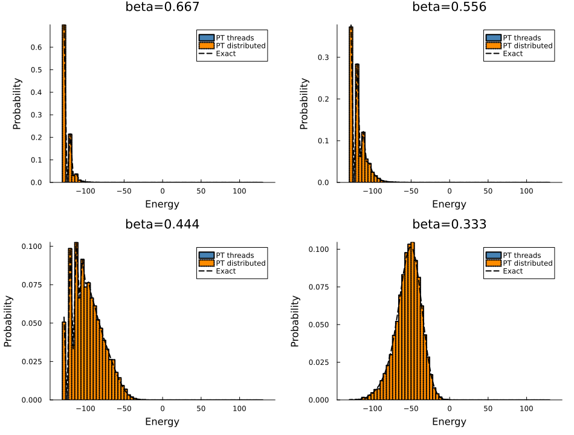

using Random, Statistics, StatsBase, Plots
using Distributed
using Base.Threads
using MonteCarloX, SpinSystems%%
Background
Parallel tempering (replica exchange) runs multiple replicas at different inverse temperatures $\beta$. Each replica performs local Metropolis sweeps, then neighboring replicas attempt an exchange.
The main practical benefit is robust sampling across continuous phase transitions and better exploration of rugged energy landscapes via repeated annealing across the temperature ladder.
In this example we keep the loop structure intentionally simple:
- thermalize,
- run measurement sweeps,
- attempt exchanges,
- compare sampled energy distributions to exact references.
%%
Constants
const CI_MODE = get(ENV, "MCX_SMOKE", get(ENV, "MCX_CI", "false")) == "true"
L = 8
nreplicas = CI_MODE ? 2 : 4
nmeasurements = CI_MODE ? 200 : 20_000
ntherm_init = CI_MODE ? 20 : 2_000
ntherm_after_exchange = CI_MODE ? 1 : 20
sweeps_between_exchange = CI_MODE ? 4 : 200
measurement_interval = 1
Tmin = 1.5
Tmax = 3.0
seed = 42
nreplicas >= 2 || throw(ArgumentError("nreplicas must be >= 2"))
nmeasurements >= 1 || throw(ArgumentError("nmeasurements must be >= 1"))
sweeps_between_exchange >= 1 || throw(ArgumentError("sweeps_between_exchange must be >= 1"))
measurement_interval >= 1 || throw(ArgumentError("measurement_interval must be >= 1"))true%%
Sweep helper
function sweep_replica!(sys, alg, L)
for _ in 1:(L * L)
spin_flip!(sys, alg)
end
return nothing
endsweep_replica! (generic function with 1 method)%%
Threaded PT run
let
global betas = set_betas(nreplicas, inv(Tmax), inv(Tmin), :uniform)
systems_t = [Ising([L, L]) for _ in 1:nreplicas]
algs_t = [Metropolis(MersenneTwister(seed + r); β=betas[r]) for r in 1:nreplicas]
pt_t = ParallelTempering(algs_t)
@threads for r in 1:nreplicas
init!(systems_t[r], :random; rng=algs_t[r].rng)
for _ in 1:ntherm_init
sweep_replica!(systems_t[r], algs_t[r], L)
end
end
energies_t = zeros(Float64, nreplicas)
mags_t = zeros(Float64, nreplicas)
meas_t = Measurements([
:energies => (_ -> copy(energies_t)) => Vector{Vector{Float64}}(),
:mags => (_ -> copy(mags_t)) => Vector{Vector{Float64}}(),
], interval=measurement_interval)
index_trace_t = Vector{Vector{Int}}()
for meas in 1:nmeasurements
@threads for r in 1:nreplicas
sweep_replica!(systems_t[r], algs_t[r], L)
energies_t[r] = energy(systems_t[r])
mags_t[r] = magnetization(systems_t[r])
end
n_before = length(data(meas_t, :energies))
measure!(meas_t, nothing, meas)
if length(data(meas_t, :energies)) > n_before
push!(index_trace_t, copy(pt_t.indices))
end
if meas % sweeps_between_exchange == 0
update!(pt_t, energies_t)
if ntherm_after_exchange > 0
@threads for r in 1:nreplicas
for _ in 1:ntherm_after_exchange
sweep_replica!(systems_t[r], algs_t[r], L)
end
end
end
end
end
global energy_samples_t = [Float64[] for _ in 1:nreplicas]
global mag_samples_t = [Float64[] for _ in 1:nreplicas]
energy_trace_t = data(meas_t, :energies)
mag_trace_t = data(meas_t, :mags)
@inbounds for k in eachindex(energy_trace_t)
idxs = index_trace_t[k]
es = energy_trace_t[k]
ms = mag_trace_t[k]
for r in eachindex(idxs)
push!(energy_samples_t[idxs[r]], es[r])
push!(mag_samples_t[idxs[r]], ms[r])
end
end
global rates_t = acceptance_rates(pt_t)
println("PT Ising2D threaded finished")
println("L = $(L), replicas = $(nreplicas), threads = $(nthreads())")
println("mean exchange acceptance = $(round(mean(rates_t), digits=4))")
endPT Ising2D threaded finished
L = 8, replicas = 4, threads = 1
mean exchange acceptance = 0.3333%%
Distributed PT run
distributed_result = nothingdistaddprocs = haskey(ENV, "CI") ? 0 : max(1, min(nreplicas - 1, Sys.CPUTHREADS - 1))
dist_addprocs = 0
dist_backend = init(:Distributed; addprocs=dist_addprocs)
systems_d = [Ising([L, L]) for _ in 1:nreplicas]
algs_d = [Metropolis(MersenneTwister(seed + r); β=betas[r]) for r in 1:nreplicas]
pt_d = ParallelTempering(algs_d)
for r in 1:nreplicas
init!(systems_d[r], :random; rng=algs_d[r].rng)
end
for r in 1:nreplicas
for _ in 1:ntherm_init
sweep_replica!(systems_d[r], algs_d[r], L)
end
end
energies_d = zeros(Float64, nreplicas)
mags_d = zeros(Float64, nreplicas)
meas_d = Measurements([
:energies => (_ -> copy(energies_d)) => Vector{Vector{Float64}}(),
:mags => (_ -> copy(mags_d)) => Vector{Vector{Float64}}(),
], interval=measurement_interval)
index_trace_d = Vector{Vector{Int}}()
function _sweep_state(state, L)
sys, alg = state
for _ in 1:(L * L)
spin_flip!(sys, alg)
end
return (sys=sys, alg=alg, energy=energy(sys), mag=magnetization(sys))
end
for meas in 1:nmeasurements
states = collect(zip(systems_d, algs_d))
results = Distributed.pmap(st -> _sweep_state(st, L), states)
for r in 1:nreplicas
systems_d[r] = results[r].sys
algs_d[r] = results[r].alg
energies_d[r] = results[r].energy
mags_d[r] = results[r].mag
end
n_before = length(data(meas_d, :energies))
measure!(meas_d, nothing, meas)
if length(data(meas_d, :energies)) > n_before
push!(index_trace_d, copy(pt_d.indices))
end
if meas % sweeps_between_exchange == 0
update!(pt_d, energies_d)
if ntherm_after_exchange > 0
for r in 1:nreplicas
for _ in 1:ntherm_after_exchange
sweep_replica!(systems_d[r], algs_d[r], L)
end
end
end
end
end
energy_samples_d = [Float64[] for _ in 1:nreplicas]
mag_samples_d = [Float64[] for _ in 1:nreplicas]
energy_trace_d = data(meas_d, :energies)
mag_trace_d = data(meas_d, :mags)
@inbounds for k in eachindex(energy_trace_d)
idxs = index_trace_d[k]
es = energy_trace_d[k]
ms = mag_trace_d[k]
for r in eachindex(idxs)
push!(energy_samples_d[idxs[r]], es[r])
push!(mag_samples_d[idxs[r]], ms[r])
end
end
rates_d = acceptance_rates(pt_d)
distributed_result = (
energy_samples=energy_samples_d,
mag_samples=mag_samples_d,
rates=rates_d,
workers=Distributed.nworkers(),
)
println("PT Ising2D distributed finished")
println("workers = $(Distributed.nworkers()), mean exchange acceptance = $(round(mean(rates_d), digits=4))")
finalize!(dist_backend)PT Ising2D distributed finished
workers = 1, mean exchange acceptance = 0.3333
┌ Warning: rmprocs: process 1 not removed
└ @ Distributed /opt/hostedtoolcache/julia/1.12.6/x64/share/julia/stdlib/v1.12/Distributed/src/cluster.jl:1065%%
Plot threaded vs distributed vs exact
for (i, β) in enumerate(betas)
println("beta[$i] = $(round(β, digits=4)), threaded samples = $(length(energy_samples_t[i]))")
if distributed_result !== nothing
println(" distributed samples = $(length(distributed_result.energy_samples[i]))")
end
end
exact_logdos = logdos_exact_ising2D(L)
edges = get_edges(exact_logdos.bins[1])
plots = Any[]
for (i, β) in enumerate(betas)
p_i = plot(xlabel="Energy", ylabel="Probability",
title="beta=$(round(β, digits=3))", legend=:topright)
samples_t = energy_samples_t[i]
if !isempty(samples_t)
hist_t = fit(Histogram, samples_t, edges, closed=:left)
dist_t = StatsBase.normalize(hist_t; mode=:probability)
plot!(p_i, dist_t; label="PT threads", lw=2, color=:steelblue)
end
if distributed_result !== nothing
samples_d = distributed_result.energy_samples[i]
if !isempty(samples_d)
hist_d = fit(Histogram, samples_d, edges, closed=:left)
dist_d = StatsBase.normalize(hist_d; mode=:probability)
plot!(p_i, dist_d; label="PT distributed", lw=2, color=:darkorange, ls=:dot)
end
end
dist_exact = distribution_exact_ising2D(L, β)
plot!(p_i, get_centers(dist_exact), dist_exact.values; label="Exact", lw=2, color=:black, ls=:dash)
push!(plots, p_i)
end
ncols = 2
nrows = 2
plot(plots...;
layout=(nrows, ncols),
size=(950, 720),
margin=3Plots.mm,
background_color=:white,
background_color_outside=:white)
This page was generated using Literate.jl.